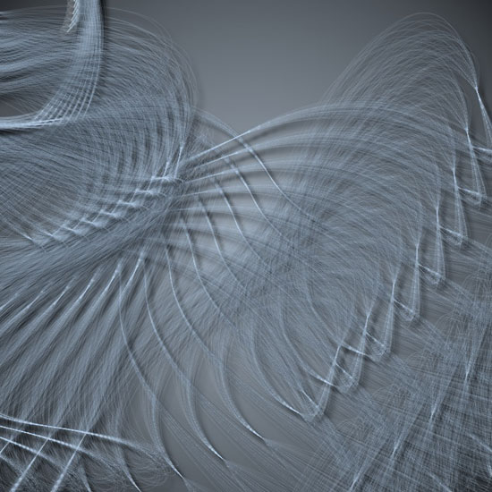
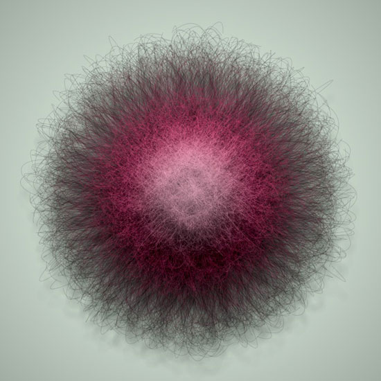
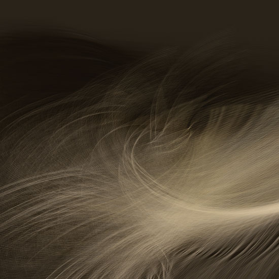
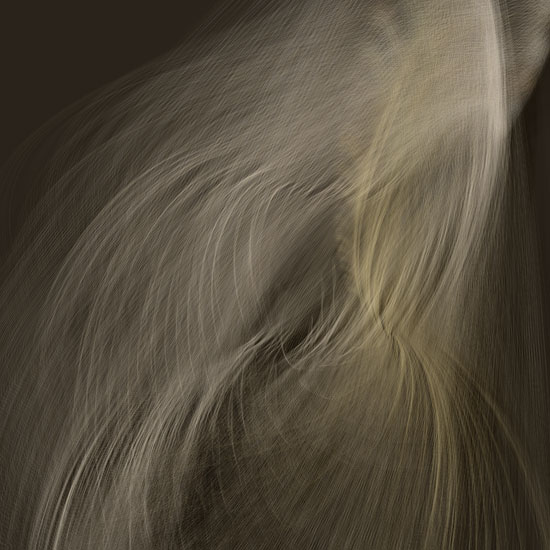
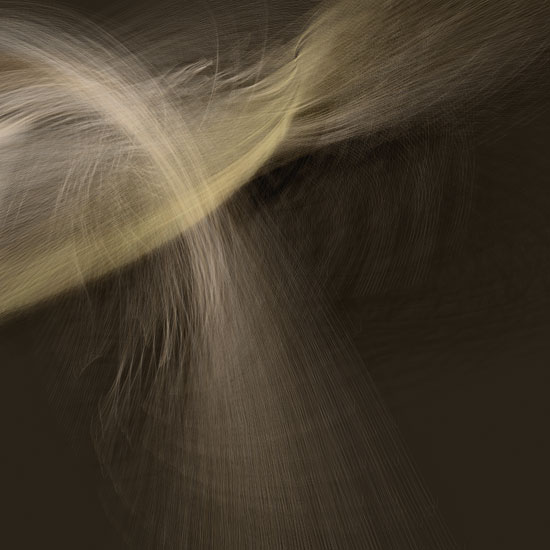

Growing things
Growing things is a collection of scripts that produce what I would refer to as 2nd generation NodeBox output (e.g. they are made possible with a mashup of path mathematics, the tutorials on geometry math and recent libraries such as Colors).
The central theme here is to experiment with curves in NodeBox and find out what kind of functionality we could bundle in a "Paths" library. In analogy to what the Colors library does for color, this library would put easy commands on top of the standard Bézier functionality in NodeBox (easier math, commands like connect(), parameters like fluid, concepts like path ranges, ...).
Integrated mathematics
One of the starting points was a conversation I had with Mark Meyer on randomness vs. control in NodeBox. Similar ideas are explored in the Path Filter examples and in the Peter De Jong attractor forum post. I'll outline the essentials here.
Currently, we interact with NodeBox by drawing basic shapes (ovals, rectangles) based on their appearance on the canvas rather than any quality intrinsic to the shapes. To create non-random relationships between shapes a user needs to write all the math on top of the shapes. We want to expand the basic shapes to a greater layer of abstraction by having them understand more about themselves. Users could then (for example) use circle shapes that know about tangency to derive related circles with no more code than circle2 = circle1.tangent(radius, bearing).
Some steps have already been taken. The (now) integrated path math allows you to find points on a path without having to do all the math by yourself, useful geometry commands have been bundled in an integrated geo library, libraries like Cornu, Supershape and SVG have received good updates. There's even some rumors that NodeBox might render curves much, much faster in the near future.
1/ Fountain
The Fountain example below is based on the concept of a strand, a bundle of curves that move together elegantly like a single curveto() command. Using geometry math, strands of curves are then connected together seamlessly so they act (flow/move/progress) as a single path. Then we make some copies of that path to create an organic composition. Using shadow and gradients from the Colors library we can add further depth and realism.

2/ Kudzu
The Kudzu example uses a combination of Cornu curves and Supershapes to draw vines of what faintly resembles a kudzu flower. We first create a Cornu path that originates from the bottom center and curves towards the center of the canvas. Then, using path mathematics, we calculate a number of points on the path and place a supershape flower at each point. To get the rotation of each flower right we need some geometry math.
Each flower is colored using a gradient and a shadow from the Colors library. If you compare the output to a version without the gradients, the result is strikingly more "finished". It might take some time for the output to render though.

3/ Dandelion
The Dandelion example basically creates a fluffy ball in a given color, expanding on some principles explored in Superfolia. The output based on a cultivate() command that draws hairs jutting outwards on a path by taking a number of points on the path and determining the angle perpendicular to the point's vector. This is applied to a number of circles that diminish in size.
Each of the circles uses is colored using a gradient list from the Colors library. The combination of going from dark to light shades and adding a dropshadow adds depth to the composition.

4/ Nebula
The Nebula example is based on a merge() command that smoothly converges different curves to a single point, and a points() command that returns a number of PathElements constrained to a given area. Each of them has the same starting Bézier handle (e.g. they all point in the same direction). If we supply these points to the merge() command we get a very organic group of curves ending in a point. From this point we then explode to many new points, and so on. Multiple versions of this pattern with different scale, rotation and color are put on top of each other.
Like the examples above, the trick is to use a large amount of very thin curves, use shadows and subtle analog shades of a single color.



Finally, I'd like to note that the Nebula render on the source code page was dedicated to Mats, a best friend's son who died of leukemia in february 2008.
Created by Tom De Smedt